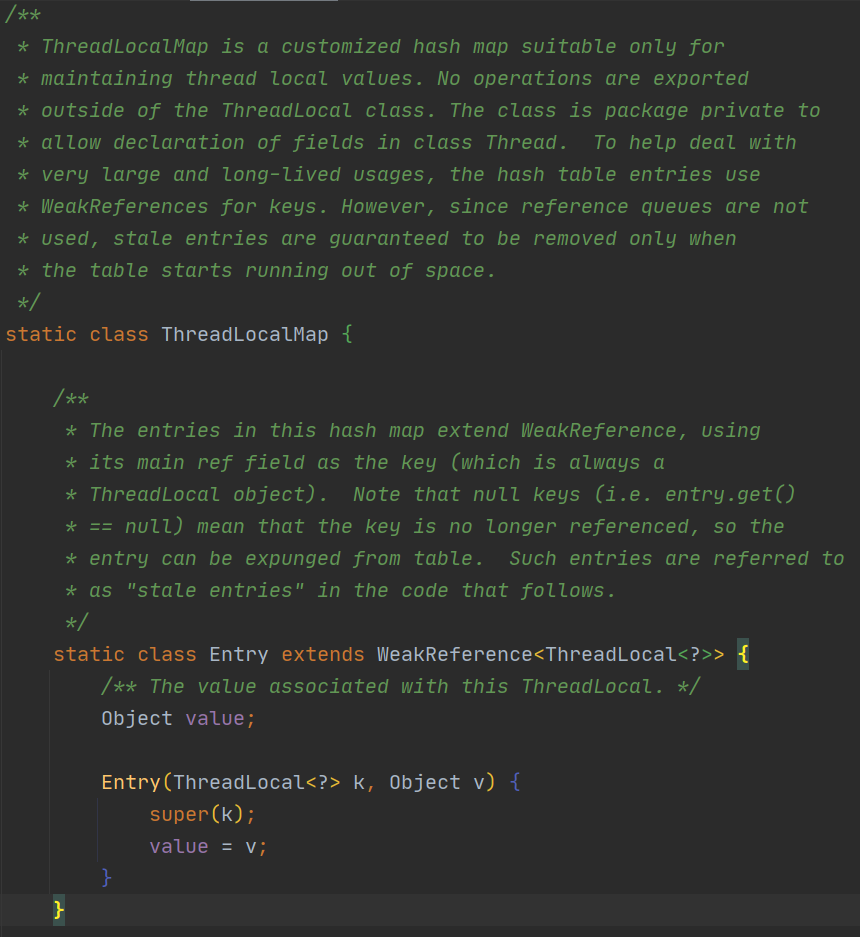

ThreadLocal源码解析
-
ThreadLocal是什么
多个线程想使用共享变量的时候，容易出现问题，使用ThreadLocal的话，每个线程都会创建该共享变量的副本，使用这个副本的话每个线程互不影响
-
ThreadLocal的用途
数据库连接
每次连接，然后关闭，如果频繁连接关闭的话会给服务器很大的压力，使用ThreadLocal就不会严重影响程序执行性能
-
ThreadLocal源码解析
当中几个比较重要的API是：
-
get()获取ThreadLocal的值
-
set(T value)设置ThreadLocal的值
-
remove()删除ThreadLocal
-
initialValue()初始化ThreadLocal的值
ThreadLocal里有一个静态内部类ThreadLocalMap，用Entry进行存储，ThreadLocalMap的key是threadLocal对象，value是传入的

① set()：获取当前线程t，然后getMap获得t.threadLocals，threadLocals是ThreadLocalMap对象，如果之前有map，则直接修改map中key为当前threadLocal对象的值，否则新建一个map，修改其value值。
/** * Sets the current thread's copy of this thread-local variable * to the specified value. Most subclasses will have no need to * override this method, relying solely on the {@link #initialValue} * method to set the values of thread-locals. * * @param value the value to be stored in the current thread's copy of * this thread-local. */ public void set(T value) { Thread t = Thread.currentThread(); ThreadLocalMap map = getMap(t); if (map != null) map.set(this, value); else createMap(t, value); } /** * Get the map associated with a ThreadLocal. Overridden in * InheritableThreadLocal. * * @param t the current thread * @return the map */ ThreadLocalMap getMap(Thread t) { return t.threadLocals; } /** * Create the map associated with a ThreadLocal. Overridden in * InheritableThreadLocal. * * @param t the current thread * @param firstValue value for the initial entry of the map */ void createMap(Thread t, T firstValue) { t.threadLocals = new ThreadLocalMap(this, firstValue); }/* ThreadLocal values pertaining to this thread. This map is maintained * by the ThreadLocal class. */ ThreadLocal.ThreadLocalMap threadLocals = null;② get()：本质是从本线程的threadLocals这个ThreadLocalMap对象（即map）里利用key从Entry中拿到value，如果拿不到，则setInitialValue()初始化value
/** * Returns the value in the current thread's copy of this * thread-local variable. If the variable has no value for the * current thread, it is first initialized to the value returned * by an invocation of the {@link #initialValue} method. * * @return the current thread's value of this thread-local */ public T get() { Thread t = Thread.currentThread(); ThreadLocalMap map = getMap(t); if (map != null) { ThreadLocalMap.Entry e = map.getEntry(this); if (e != null) { @SuppressWarnings("unchecked") T result = (T)e.value; return result; } } return setInitialValue(); } /** * Variant of set() to establish initialValue. Used instead * of set() in case user has overridden the set() method. * * @return the initial value */ private T setInitialValue() { T value = initialValue(); Thread t = Thread.currentThread(); ThreadLocalMap map = getMap(t); if (map != null) map.set(this, value); else createMap(t, value); return value; }③ remove()
/** * Removes the current thread's value for this thread-local * variable. If this thread-local variable is subsequently * {@linkplain #get read} by the current thread, its value will be * reinitialized by invoking its {@link #initialValue} method, * unless its value is {@linkplain #set set} by the current thread * in the interim. This may result in multiple invocations of the * {@code initialValue} method in the current thread. * * @since 1.5 */ public void remove() { ThreadLocalMap m = getMap(Thread.currentThread()); if (m != null) m.remove(this); }小结：
（1）Thread.threadLocals变量是一个ThreadLocalMap对象
（2）ThreadLocalMap是ThreadLocal中的一个静态内部类，使用Entry进行存储
（3）存储的key为ThreadLocal对象，value是设置进去的
（4）get方法之后必须先set或者覆写initialValue()初始化，否则会报空指针异常
-
-
ThreadLocal内存泄露
原因：ThreadLocal作为ThreadLocalMap的key，当它变成null时，应该被GC回收，但是ThreadLocalMap和Thread的生命周期一样，所以不会被回收，这就会产生key为null了，但是value还在的现象，造成了内存泄露
解决方法：使用完ThreadLocal之后，执行remove()